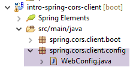
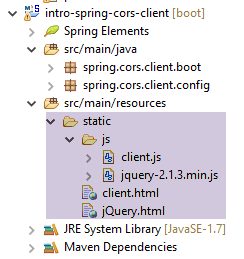
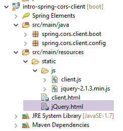
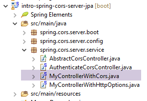
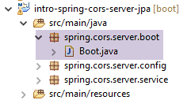

18. [Cours] : Gestion des accès inter-domaines
Mots clés : CORS (Cross-Origin Resource Sharing).
Ce chapitre est un peu à l'écart du TD. Il a été gardé parce qu'il introduit la programmation web et la programmation Javascript. Il faut se rappeler ici que l'un des objectifs de ce TD est de présenter les concepts fréquemment utilisés dans le dévelopement JEE, ç-à-d le développement web s'appuyant sur des frameworks Java. On complète ici, le serveur web utilisé dans l'étude de la base de données de produits et de catégories pour lui permettre d'accepter des requêtes inter-domaines.
Dans le document [Tutoriel AngularJS / Spring 4], on développe une application client / serveur où le client est une application AngularJS :
 |
- les pages HTML / CSS / JS de l'application Angular viennent du serveur [1] ;
- en [2], le service [dao] fait une requête à un autre serveur, le serveur [2]. Et bien ça, c'est interdit par le navigateur qui exécute l'application Angular parce que c'est une faille de sécurité. L'application ne peut interroger que le serveur d'où elle vient, ç-à-d le serveur [1] ;
En fait, il est inexact de dire que le navigateur interdit à l'application Angular d'interroger le serveur [2]. Elle l'interroge en fait pour lui demander s'il autorise un client qui ne vient pas de chez lui à l'interroger. On appelle cette technique de partage, le CORS (Cross-Origin Resource Sharing). Le serveur [2] donne son accord en envoyant des entêtes HTTP précis.
Nous allons créer l'architecture suivante :
 |
- en [1], une application web délivre des pages HTML / jS ;
- en [2], le navigateur exécute le Javascript embarqué dans les pages HTML pour interroger le service web sécurisé [3] ;
18.1. Support
 |
Les projets de ce chapitre seront trouvés dans le dossier [support / chap-18].
18.2. Le projet du client
On crée le projet Eclipse suivant :
 |
18.3. Configuration Maven
Le projet est un projet Maven avec le fichier [pom.xml] suivant :
<project xmlns="http://maven.apache.org/POM/4.0.0" xmlns:xsi="http://www.w3.org/2001/XMLSchema-instance"
xsi:schemaLocation="http://maven.apache.org/POM/4.0.0 http://maven.apache.org/xsd/maven-4.0.0.xsd">
<modelVersion>4.0.0</modelVersion>
<groupId>istia.st.webjson</groupId>
<artifactId>intro-server-webjson-01</artifactId>
<version>0.0.1-SNAPSHOT</version>
<name>intro-server-webjson-01</name>
<description>démo spring mvc</description>
<parent>
<groupId>org.springframework.boot</groupId>
<artifactId>spring-boot-starter-parent</artifactId>
<version>1.2.7.RELEASE</version>
</parent>
<dependencies>
<dependency>
<groupId>istia.st.springdata</groupId>
<artifactId>intro-spring-data-01</artifactId>
<version>0.0.1-SNAPSHOT</version>
</dependency>
<dependency>
<groupId>org.springframework.boot</groupId>
<artifactId>spring-boot-starter-web</artifactId>
</dependency>
</dependencies>
<build>
<plugins>
<plugin>
<groupId>org.springframework.boot</groupId>
<artifactId>spring-boot-maven-plugin</artifactId>
</plugin>
<plugin>
<groupId>org.apache.maven.plugins</groupId>
<artifactId>maven-surefire-plugin</artifactId>
<version>2.18.1</version>
</plugin>
</plugins>
</build>
</project>
- lignes 11-15 : c'est un projet Spring Boot ;
- lignes 23-26 : on utilise la dépendance [spring-boot-starter-web] qui amène avec elle un serveur Tomcat et Spring MVC ;
18.4. Configuration Spring
 |
La classe [WebConfig] qui configure le projet Spring est la suivante :
package spring.cors.client.config;
import org.springframework.beans.factory.annotation.Autowired;
import org.springframework.boot.context.embedded.EmbeddedServletContainerFactory;
import org.springframework.boot.context.embedded.ServletRegistrationBean;
import org.springframework.boot.context.embedded.tomcat.TomcatEmbeddedServletContainerFactory;
import org.springframework.context.ApplicationContext;
import org.springframework.context.annotation.Bean;
import org.springframework.web.context.WebApplicationContext;
import org.springframework.web.servlet.DispatcherServlet;
import org.springframework.web.servlet.config.annotation.EnableWebMvc;
import org.springframework.web.servlet.config.annotation.ResourceHandlerRegistry;
import org.springframework.web.servlet.config.annotation.WebMvcConfigurerAdapter;
@EnableWebMvc
public class WebConfig extends WebMvcConfigurerAdapter {
// -------------------------------- configuration couche [web]
@Autowired
private ApplicationContext context;
@Bean
public DispatcherServlet dispatcherServlet() {
DispatcherServlet servlet = new DispatcherServlet((WebApplicationContext) context);
return servlet;
}
@Bean
public ServletRegistrationBean servletRegistrationBean(DispatcherServlet dispatcherServlet) {
return new ServletRegistrationBean(dispatcherServlet, "/*");
}
@Bean
public EmbeddedServletContainerFactory embeddedServletContainerFactory() {
return new TomcatEmbeddedServletContainerFactory("", 8081);
}
@Override
public void addResourceHandlers(ResourceHandlerRegistry registry) {
registry.addResourceHandler("/*.html").addResourceLocations("classpath:/static/");
registry.addResourceHandler("/*.js").addResourceLocations("classpath:/static/js/");
}
}
- ligne 15 : la classe configure un projet Spring MVC ;
- ligne 16 : la classe étend la classe [WebMvcConfigurerAdapter] pour redéfinir certaines de ses méthodes ;
- lignes 18-36 : nous avons déjà rencontré ces beans, par exemple au paragraphe 13.5.3.1. On notera, ligne 35, que le service web fonctionnera sur le port 8081 ;
- lignes 38-42 : la méthode [addResourceHandlers] permet de définir des ressources statiques, ç-à-d des ressources non traitées par la [DispatcherServlet] de la ligne 23 ;
- ligne 40 : toute requête d'une ressource ayant un suffixe .html aura pour réponse le fichier demandé par la requête et trouvé dans le dossier [static] du Classpath du projet ;
- ligne 41 : toute requête d'une ressource ayant un suffixe .js aura pour réponse le fichier Javascript demandé par la requête et trouvé dans le dossier [static/js] du Classpath du projet ;
 |
18.5. Rudiments de jQuery et de Javascript
La page HTML du client sera la suivante :
 |
Elle embarquera avec elle du code Javascript (jS) exécuté dans le navigateur. Nous allons présenter quelques rudiments de Javascript qui vont nous permettre de comprendre le code. Le client va faire des appels HTTP à l'aide de la bibliothèque jQuery [https://jquery.com/] qui apporte de nombreuses fonctions facilitant le développement Javascript. Nous créons un fichier statique HTML [jQuery.html] que l'on place dans le dossier [static] :
 |
Ce fichier aura le contenu suivant :
<!DOCTYPE html>
<html xmlns="http://www.w3.org/1999/xhtml">
<head>
<meta http-equiv="Content-Type" content="text/html; charset=utf-8" />
<title>JQuery-01</title>
<script type="text/javascript" src="/jquery-2.1.3.min.js"></script>
</head>
<body>
<h3>Rudiments de JQuery</h3>
<div id="element1">Elément 1</div>
</body>
</html>
- ligne 6 : importation de jQuery ;
- lignes 10-12 : un élément de la page d'id [element1]. Nous allons jouer avec cet élément.
Il nous faut télécharger le fichier [jquery-2.1.3.min.js]. On trouvera la dernière version de jQuery à l'URL [http://jquery.com/download/] :

On placera le fichier téléchargé dans le dossier [static / js] et on changera la ligne 6 du fichier HTML en fonction de la version installée.
Ceci fait, on demande la vue statique [jQuery.html] avec Chrome [1-2] :
 |
Avec Google Chrome, faire [Ctrl-Maj-I] pour faire apparaître les outils de développement [3]. L'onglet [Console] [4] permet d'exécuter du code Javascript. Nous donnons dans ce qui suit des commandes Javascript à taper et nous en donnons une explication.
|
: rend la collection de tous les éléments d'id [element1], donc normalement une collection de 0 ou 1 élément parce qu'on ne peut avoir deux id identiques dans une page HTML. |  |
|
: affecte le texte [blabla] à tous les éléments de la collection. Ceci a pour effet de changer le contenu affiché par la page |   |
|
cache les éléments de la collection. Le texte [blabla] n'est plus affiché. |   |
|
: affiche de nouveau la collection. Cela nous permet de voir que l'élément d'id [element1] a l'attribut CSS style='display : none;' qui fait que l'élément est caché. |  |
|
: affiche les éléments de la collection. Le texte [blabla] apparaît de nouveau. C'est l'attribut CSS style='display : block;' qui assure cet affichage. |   |
|
: fixe un attribut à tous les éléments de la collection. L'attribut est ici [style] et sa valeur [color: red]. Le texte [blabla] passe en rouge. |   |
 | |
 |
On notera que l'URL du navigateur n'a pas changé pendant toutes ces manipulations. Il n'y a pas eu d'échanges avec le serveur web. Tout se passe à l'intérieur du navigateur. Maintenant, visualisons le code source de la page :
 |  |
C'est le texte initial. Il ne reflète en rien les manipulations que l'on a faites sur l'élément des lignes 10-12. Il est important de s'en souvenir lorsqu'on fait du débogage Javascript. Il est alors souvent inutile de visualiser le code source de la page affichée.
18.6. Le code Javascript de l'application
Revenons à la page de l'application cliente qui va interroger le service web / jSON :
 |
 |
Le code HTML de cette page est le suivant :
<!DOCTYPE html>
<html>
<head>
<meta charset="UTF-8">
<title>Spring MVC</title>
<script type="text/javascript" src="/jquery-2.1.3.min.js"></script>
<script type="text/javascript" src="/client.js"></script>
</head>
<body>
<h2>Client du service web / jSON</h2>
<form id="formulaire">
<!-- identifiant -->
Identifiant :
<!-- -->
<input type="text" id="identifiant" name="identifiant" value="" />
<!-- mot de passe -->
<br /> <br /> Mot de passe :
<!-- -->
<input type="text" id="password" name="password" value="" />
<!-- méthode HTTP -->
<br /> <br /> Méthode HTTP :
<!-- -->
<input type="radio" id="get" name="method" value="get"
checked="checked" />GET
<!-- -->
<input type="radio" id="post" name="method" value="post" />POST
<!-- URL -->
<br /> <br />URL cible (commençant par /): <input type="text"
id="url" size="30"><br />
<!-- valeur postée -->
<br /> Chaîne jSON à poster : <input type="text" id="posted"
size="50" />
<!-- bouton de validation -->
<br /> <br /> <input type="button" value="Valider"
onclick="javascript:requestServer()"></input>
</form>
<hr />
<h2>Réponse du serveur</h2>
<div id="response"></div>
</body>
</html>
- ligne 6 : on importe la bibliothèque jQuery ;
- ligne 7 : on importe un code que nous allons écrire ;
- lignes 15, 19, 26, 29, 31 : on notera les identifiants [id] des composants de la page. Le javascript référence ces composants via ces identifiants ;
Le code [client.js] est le suivant :
// données globales
var url;
var posted;
var response;
var method;
var baseUrl = 'http://localhost:8080';
var identifiant;
var password;
var authorizationHeader;
function requestServer() {
// on récupère les informations
var urlValue = url.val();
var postedValue = posted.val();
var identifiantValue = identifiant.val();
var passwordValue = password.val();
var method = document.forms[0].elements['method'].value;
authorizationCode = btoa(identifiantValue + ':' + passwordValue);
// on efface la réponse précédente
response.text("");
// on fait un appel Ajax à la main
if (method === "get") {
doGet(urlValue);
} else {
doPost(urlValue, postedValue);
}
}
function doGet(url) {
// on fait un appel Ajax à la main
$.ajax({
headers : {
'Authorization':'Basic '+authorizationCode
},
url : baseUrl + url,
type : 'GET',
dataType : 'text',
beforeSend : function() {
},
success : function(data) {
// résultat texte
response.text(data);
},
complete : function() {
},
error : function(jqXHR) {
// erreur système
response.text(JSON.stringify(jqXHR.statusCode()));
}
})
}
function doPost(url, posted) {
// on fait un appel Ajax à la main
$.ajax({
headers : {
'Authorization':'Basic '+authorizationCode
},
url : baseUrl + url,
type : 'POST',
contentType : 'application/json; charset=UTF-8',
data : posted,
dataType : 'text',
beforeSend : function() {
},
success : function(data) {
// résultat texte
response.text(data);
},
complete : function() {
},
error : function(jqXHR) {
// erreur système
response.text(JSON.stringify(jqXHR.statusCode()));
}
})
}
// au chargement du document
$(document).ready(function() {
// on récupère les références des composants de la page
identifiant = $("#identifiant");
password = $("#password");
url = $("#url");
posted = $("#posted");
response = $("#response");
});
- lignes 80-87 : du code jS exécuté à la fin du chargement du document dans le navigateur ;
- lignes 81-86 : on récupère les références des différents éléments du document HTML, via leur identifiant [id] ;
- lignes 2-9 : des variables globales connues dans toute les fonctions définies dans le fichier jS ;
- ligne 13 : on récupère l'URL tapée par l'utilisateur ;
- ligne 14 : on récupère la valeur qu'il veut poster (vide si opération GET) ;
- ligne 15 : on récupère l'identifiant tapé par l'utilisateur ;
- ligne 16 : on récupère sont mot de passe ;
- ligne 17 : on récupère la façon [get] ou [post] à utiliser pour demander l'URL de la ligne 9 :
- [document] désigne le document chargé par le navigateur, ce qu'on appelle le DOM (Document Object Model),
- [document.forms[0]] désigne le 1er formulaire du document, un document pouvant en avoir plusieurs. Ici, il n'y en qu'un,
- [document.forms[0].elements['method']] désigne l'élément du formulaire qui a l'attribut [name='method']. Il y en a deux :
<input type="radio" id="get" name="method" value="get" checked="checked" />GET
<input type="radio" id="post" name="method" value="post" />POST
- (suite)
- [document.forms[0].elements['method'].value] est la valeur qui va être postée pour le composant qui a l'attribut [name='method']. On sait que la valeur postée est la valeur de l'attribut [value] du bouton radio coché. Ici, ce sera donc l'une des chaînes ['get', 'post'] ;
- ligne 18 : on construit l'encodage Base74 de la chaîne identifiant:password. Cet chaîne codée va servir dans l'entête HTTP [Authorization] que nous allons envoyer au serveur pour authentifier la requête ;
- lignes 22-26 : selon la méthode HTTP à utiliser, on exécute la méthode [doGet] ou [doPost] ;
- la méthode jQuery [$.ajax] effectue un appel HTTP ;
- lignes 32-34 : on s'adresse à un serveur qui exige un entête HTTP [Authorization: Basic code] ;
- ligne 35 : l'utilisateur saisira des URL du type [/cors-getAllCategories,/cors-addProduits, ...]. Il faut donc compléter ces URL avec l'URL du serveur de la ligne 6 ;
- ligne 36 : méthode HTTP à utiliser ;
- ligne 37 : le serveur renvoie du jSON. On indique le type [text] comme type de résultat afin de l'afficher tel qu'il a été reçu ;
- ligne 42 : affichage de la réponse texte du serveur ;
- lignes 48-49 : affichage du message d'erreur éventuel ;
- ligne 53 : la méthode [doPost] reçoit un second paramètre qui est la valeur à poster ;
- ligne 61 : pour indiquer que la valeur postée va l'être sous la forme d'une chaîne jSON ;
18.7. Exécution du client
L'application cliente est une application Spring Boot lancée par la classe exécutable [Boot] suivante :
 |
package spring.cors.client.boot;
import org.springframework.boot.SpringApplication;
import spring.cors.client.config.WebConfig;
public class Boot {
public static void main(String[] args) {
SpringApplication.run(WebConfig.class, args);
}
}
- ligne 10 : la méthode [SpringApplication.run] utilise le fichier de configuration [WebConfig]. La page [client.html] va être déployée sur le serveur Tomcat présent dans le Classpath du projet ;
18.8. L'URL [/getAllCategories]
Nous lançons :
- le serveur web / json sur le port 8080 ;
- le client de ce serveur sur le port 8081 ;
puis nous demandons l'URL [http://localhost:8081/client.html] [1] :
 |
- en [2], nous faisons un GET sur l'URL [http://localhost:8080/getAllCategories];
Nous n'obtenons pas de réponse du serveur. Lorsqu'on regarde la console de développement de Chrome (Ctrl-Maj-I) on découvre une erreur :
 |
- en [1], on est dans l'onglet [Network] ;
- en [2], on voit que la requête HTTP qui a été faite n'est pas [GET] mais [OPTIONS]. Dans le cas d'une requête inter-domaines, le navigateur vérifie auprès du serveur qu'un certain nombre de conditions sont vérifiées en lui envoyant une requête HTTP [OPTIONS]. En l'occurrence, les requêtes sont celles pointées par les pastilles [5-6] ;
- en [5], le navigateur demande si l'URL cible peut être atteinte avec un GET. L'entête de la requête [Access-Control-Request-Method] demande une réponse avec un entête HTTP [Access-Control-Allow-Methods] indiquant que la méthode demandée est acceptée ;
- en [6], le navigateur envoie l'entête HTTP [Origin: http://localhost:8081]. Cet entête demande une réponse dans un entête HTTP [Access-Control-Allow-Origin] indiquant que l'origine indiquée est acceptée ;
- en [7], le navigateur demande si les entêtes HTTP [accept] et [authorization] sont acceptés. L'entête de la requête [Access-Control-Request-Headers] attend une réponse avec un entête HTTP [Access-Control-Allow-Headers] indiquant que les entêtes demandés sont acceptés ;
- on a une erreur en [3]. En cliquant sur l'icône, on a l'erreur [4] ;
- en [4], le message indique que le serveur n'a pas envoyé l'entête HTTP [Access-Control-Allow-Origin] qui indique si l'origine de la requête est acceptée ;
- en [8], on peut constater que le serveur n'a effectivement pas envoyé cet entête. Du coup le navigateur a refusé de faire la requête HTTP GET demandée initialement ;
Il nous faut modifier le serveur web / jSON.
18.9. Le nouveau service web / json
Nous créons un nouveau projet Maven [intro-spring-cors-server-jpa] :
 |  |
18.9.1. Configuration Maven
La configuration Maven du nouveau service web est la suivante :
<project xmlns="http://maven.apache.org/POM/4.0.0" xmlns:xsi="http://www.w3.org/2001/XMLSchema-instance"
xsi:schemaLocation="http://maven.apache.org/POM/4.0.0 http://maven.apache.org/xsd/maven-4.0.0.xsd">
<modelVersion>4.0.0</modelVersion>
<groupId>istia.st.cors</groupId>
<artifactId>spring-cors-server-jpa</artifactId>
<version>0.0.1-SNAPSHOT</version>
<name>spring-cors-server-jpa</name>
<description>démo spring cors</description>
<properties>
<project.build.sourceEncoding>UTF-8</project.build.sourceEncoding>
<java.version>1.8</java.version>
</properties>
<parent>
<groupId>org.springframework.boot</groupId>
<artifactId>spring-boot-starter-parent</artifactId>
<version>1.2.7.RELEASE</version>
</parent>
<dependencies>
<dependency>
<groupId>istia.st.spring.security</groupId>
<artifactId>intro-spring-security-server-01</artifactId>
<version>0.0.1-SNAPSHOT</version>
</dependency>
</dependencies>
<!-- plugins -->
<build>
<plugins>
<plugin>
<groupId>org.springframework.boot</groupId>
<artifactId>spring-boot-maven-plugin</artifactId>
</plugin>
<plugin>
<groupId>org.apache.maven.plugins</groupId>
<artifactId>maven-surefire-plugin</artifactId>
<version>2.18.1</version>
</plugin>
</plugins>
</build>
</project>
- lignes 23-27 : nous récupérons tout l'acquis du travail fait jusqu'à maintenant en nous appuyant sur l'archive du serveur web / json sécurisé ;
18.9.2. Configuration Spring
La classe de configuration [AppConfig] est la suivante :
 |
package spring.cors.server.config;
import org.springframework.context.annotation.Bean;
import org.springframework.context.annotation.ComponentScan;
import org.springframework.context.annotation.Configuration;
import org.springframework.context.annotation.Import;
import spring.security.config.SecurityConfig;
@Configuration
@ComponentScan(basePackages = { "spring.cors.server.service" })
@Import({ SecurityConfig.class })
public class AppConfig {
// requêtes inter-domaines
@Bean
public boolean isCorsEnabled() {
return true;
}
}
- ligne 10 : la classe est une classe de configuration Spring ;
- ligne 11 : d'autres composants Spring sont à chercher dans le paquetage [spring.cors.server.service] ;
- lignes 16-19 : nous créons un composant Spring nommé [isCorsEnabled] qui indique si on accepte ou non les clients étrangers au domaine du serveur ;
18.9.3. La classe [AbstractCorsController]
La classe [AbstractCorsController] qui sera la classe parente de tous les contrôleurs de cette application :
 |
Son code est le suivant :
package spring.cors.server.service;
import javax.servlet.http.HttpServletResponse;
import org.springframework.beans.factory.annotation.Autowired;
public abstract class AbstractCorsController {
@Autowired
private boolean isCorsEnabled;
// envoi des options au client
public void setHeaders(String origin, HttpServletResponse response) {
// Cors allowed ?
if (!isCorsEnabled || origin == null || !origin.startsWith("http://localhost")) {
return;
}
// on fixe le header CORS
response.addHeader("Access-Control-Allow-Origin", origin);
// on autorise certains headers
response.addHeader("Access-Control-Allow-Headers", "accept, authorization");
// on autorise le GET
response.addHeader("Access-Control-Allow-Methods", "GET");
}
}
- ligne 7 : la classe [CorsController] est abstraite car elle est conçue pour être étendue et non instanciée ;
- lignes 13-24 : la méthode [setHeaders] met dans la réponse [HttpServletResponse response] (ligne 13) faite au client, les entêtes HTTP réclamés par les requêtes inter-domaines ;
- ligne 33 : la méthode [/setHeaders] admet pour paramètres :
- la chaîne [origin] présent dans l'entête HTTP [Origin] des requêtes inter-domaines :
Ici le paramètre [origin] de la ligne 13 aurait la valeur [http://localhost:8081]. Au cas, où la demande ne contient pas l'entête HTTP [Origin], on s'arrangera pour avoir [origin==null] ;
- (suite)
- l'objet [HttpServletResponse response] qui va être renvoyé au client qui a fait la demande ;
Ces deux paramètres sont injectés par Spring ;
- lignes 15-175 : si l'application est configurée pour accepter les requêtes inter-domaines et si l'émetteur a envoyé l'entête HTTP [Origin] et si cette origine commence par [http://localhost], alors on va accepter la requête inter-domaines, sinon on la rejette ;
- ligne 19 : si le client est dans le domaine [http://localhost:port], on envoie l'entête HTTP :
Access-Control-Allow-Origin: http://localhost:port
qui signifie que le serveur accepte l'origine du client ;
- ligne 21 : nous avons signalé deux entêtes HTTP particuliers dans la requête HTTP [OPTIONS] :
A l'entête HTTP [Access-Control-Request-X], le serveur répond avec un entête HTTP [Access-Control-Allow-X] dans lequel il indique ce qui est autorisé. Les lignes 20-23 se contentent de reprendre la demande du client pour indiquer qu'elle est acceptée ;
18.9.4. Le contrôleur [MyControllerWithHttpOptions]
Afin de ne pas avoir à modifier le serveur web / jSON non sécurisé [intro-server-webjson-01] étudié au paragraphe 13.5.3, nous allons créer un nouveau contrôleur qui là où le serveur non sécurisé traite l'URL [/url], le nouveau contrôleur traitera l'URL [/cors-url] et cette URL acceptera les requêtes inter-domaines.
La classe [MyControllerWithHttpOptions] est le contrôleur qui va traiter les requêtes HTTP de type [OPTIONS] :
 |
package spring.cors.server.service;
import javax.servlet.http.HttpServletRequest;
import javax.servlet.http.HttpServletResponse;
import org.springframework.stereotype.Controller;
import org.springframework.web.bind.annotation.PathVariable;
import org.springframework.web.bind.annotation.RequestHeader;
import org.springframework.web.bind.annotation.RequestMapping;
import org.springframework.web.bind.annotation.RequestMethod;
import com.fasterxml.jackson.core.JsonProcessingException;
@Controller
public class MyControllerWithHttpOptions extends AbstractCorsController {
@RequestMapping(value = "/cors-getAllCategories", method = RequestMethod.OPTIONS)
public void getAllCategories(@RequestHeader(value = "Origin", required = false) String origin,
HttpServletResponse httpServletResponse){
// entêtes CORS
setHeaders(origin, httpServletResponse);
}
...
- ligne 14 : la classe est un contrôleur Spring MVC ;
- ligne 15 : la classe [MyControllerWithHttpOptions] étend la classe [AbstractCorsController] que nous venons de décrire ;
- lignes 17-18 : la méthode [getAllCategories] (ligne 18) traite l'URL ["/cors-getAllCategories"] lorsqu'elle est demandée avec la méthode HTTP [OPTIONS] ;
- ligne 18 : la méthode [getAllCategories] admet deux paramètres :
- [@RequestHeader(value = "Origin", required = false) String origin] pour récupérer la valeur de l'entête HTTP [Origin:http://localhost:8081] lorsqu'il est présent. Dans cet exemple, le paramètre [String origin] recevra la valeur [http://localhost:8081]. Cet entête n'est pas obligatoire [required = false]. Lorsqu'il n'est pas présent, le paramètre [String origin] aura la valeur null ;
- [HttpServletResponse httpServletResponse] : la réponse qui sera envoyée au client ;
- ligne 21 : on envoie les entêtes HTTP qui permettent les requêtes inter-domaines. La méthode [setHeaders] est définie dans la classe parent [AbstractCorsController] ;
Il est fait ainsi pour toutes les URL exposées par le serveur web / jSON non sécurisé [intro-server-webjson-01] étudié au paragraphe 13.5.3. Lorsque ce service expose l'URL [/url], la classe [MyControllerWithHttpOptions] ci-dessus expose l'URL [/cors-url].
18.9.5. Le contrôleur [MyControllerWithCors]
 |
La classe [MyControllerWithCors] est le contrôleur qui va traiter les requêtes HTTP de type [GET] et [POST] :
package spring.cors.server.service;
import javax.servlet.http.HttpServletRequest;
import javax.servlet.http.HttpServletResponse;
import org.springframework.beans.factory.annotation.Autowired;
import org.springframework.web.bind.annotation.PathVariable;
import org.springframework.web.bind.annotation.RequestHeader;
import org.springframework.web.bind.annotation.RequestMapping;
import org.springframework.web.bind.annotation.RequestMethod;
import org.springframework.web.bind.annotation.ResponseBody;
import com.fasterxml.jackson.core.JsonProcessingException;
import spring.webjson.service.MyController;
@Controller
public class MyControllerWithCors extends AbstractCorsController {
// dépendances Spring
@Autowired
private MyController myController;
...
@RequestMapping(value = "/cors-getAllCategories", method = RequestMethod.GET, produces = "application/json; charset=UTF-8")
@ResponseBody
public String getAllCategories(@RequestHeader(value = "Origin", required = false) String origin,
HttpServletResponse httpServletResponse) throws JsonProcessingException {
// réponse
return myController.getAllCategories();
}
...
- ligne 17 : la classe [MyControllerWithCors] est un contrôleur Spring MVC
- ligne 18 : elle étend la classe [AbstractCorsController] ;
- lignes 21-22 : injection du contrôleur [MyController] du serveur web / jSON non sécurisé [intro-server-webjson-01] étudié au paragraphe 13.5.3 ;
- lignes 25-27 : la méthode [getAllCategories] traite l'URL [/cors-getAllCategories] (ligne 28) lorsqu'elle demandée avec la méthode HTTP [GET] ;
- ligne 26 : le résultat de la méthode [getAllCategories] sera envoyé au client. Ce résultat est un flux jSON (attribut [produces] de la ligne 27 et type [String] du résultat ligne 25) ;
- ligne 27 : la méthode reçoit les mêmes paramètres que la méthode [getAllCategories] du contrôleur [MyControllerWithHttpOptions] que nous venons d'étudier ;
- ligne 30 : on demande à la méthode [myController.getAllCategories()] d'envoyer la réponse ;
Au final, c'est la méthode [myController.getAllCategories()] du serveur non sécurisé qui envoie la réponse. On a simplement enrichi sa réponse avec les entêtes nécessaires aux requêtes inter-domaines.
Il est fait ainsi pour toutes les URL exposées par le serveur web / jSON non sécurisé [intro-server-webjson-01] étudié au paragraphe 13.5.3. Lorsque ce service expose l'URL [/url], la classe [MyControllerWithCors] ci-dessus expose l'URL [/cors-url].
Une requête inter-domaine se déroulera de la façon suivante :
- le code JS du client demande l'URL [/cors-url] avec une requête HTTP GET ou un POST ;
- le navigateur qui exécute ce code intercepte cette demande et demande d'abord l'URL [/cors-url] avec une requête HTTP OPTIONS pour vérifier que le service web cible accepte les requêtes inter-domaines ;
- l'une des méthodes du contrôleur [MyControllerWithHttpOptions] envoie les entêtes inter-domaines attendus par le navigateur ;
- le navigateur demande alors l'URL initiale [/cors-url] avec une requête HTTP GET ou un POST ;
- l'une des méthodes du contrôleur [MyControllerWithCors] lui répond alors ;
18.9.6. Tests
La classe de boot du projet [intro-spring-cors-server-jpa] est la suivante :
 |
package spring.cors.server.boot;
import org.springframework.boot.SpringApplication;
import spring.cors.server.config.AppConfig;
public class Boot {
public static void main(String[] args) {
SpringApplication.run(AppConfig.class, args);
}
}
- ligne 10 : la méthode statique [SpringApplication.run] est exécutée avec la configuration Spring [AppConfig]. A cause de cette configuration, le serveur Tomcat embarqué dans les archives du projet est exécuté et l'application web [intro-spring-cors-server-jpa] est déployée dessus. L'application web du serveur non sécurisé [intro-server-webjson-01] qui fait partie des archives du projet est également déployée dessus. Comme le projet [intro-spring-security-server-01] fait également partie des archives, deux types d'URL sont finalement exposées :
- celles du service web sécurisé : /url ;
- celles du service web acceptant les requêtes inter-domaines : /cors-url ;
Nous sommes désormais prêts pour de nouveaux tests. Nous lançons la nouvelle version du service web et nous découvrons que le problème reste entier. Rien n'a changé. Si ligne 7 ci-dessous, on met un affichage console, celui-ci n'est jamais affiché montrant par là que la méthode [getAllCategories] de la classe [MyControllerWithHttpOptions] n'est jamais appelée ;
@Controller
public class MyControllerWithHttpOptions extends AbstractCorsController {
@RequestMapping(value = "/cors-getAllCategories", method = RequestMethod.OPTIONS)
public void getAllCategories(@RequestHeader(value = "Origin", required = false) String origin,
HttpServletResponse httpServletResponse){
System.out.println(un_texte) ;
// entêtes CORS
setHeaders(origin, httpServletResponse);
}
Après quelques recherches, on découvre que par défaut Spring MVC traite lui-même les commandes HTTP [OPTIONS]. Aussi c'est toujours Spring qui répond et jamais la méthode [getAllCategories] de la ligne 5 ci-dessus. Ce comportement par défaut de Spring MVC peut être changé. Nous modifions la classe [AppConfig] existante :
 |
package spring.cors.server.config;
import javax.annotation.PostConstruct;
import org.springframework.beans.factory.annotation.Autowired;
import org.springframework.context.annotation.Bean;
import org.springframework.context.annotation.ComponentScan;
import org.springframework.context.annotation.Configuration;
import org.springframework.context.annotation.Import;
import org.springframework.web.servlet.DispatcherServlet;
import spring.security.config.SecurityConfig;
@Configuration
@ComponentScan(basePackages = { "spring.cors.server.service" })
@Import({ SecurityConfig.class })
public class AppConfig {
// requêtes inter-domaines
@Bean
public boolean isCorsEnabled() {
return true;
}
@Autowired
private DispatcherServlet dispatcherServlet;
@PostConstruct
public void init() {
// l'application traite elle-même les demandes HTTP [OPTIONS]
dispatcherServlet.setDispatchOptionsRequest(true);
}
}
- lignes 25-26 : injection du bean [dispatcherServlet] qui gère les demandes des clients. Ce bean a été défini dans la configuration du serveur web / jSON non sécurisé [intro-server-webjson-01] étudié au paragraphe 13.5.3 ;
- lignes 28-29 : la méthode [init] (ligne 29) sera exécutée dès que la classe [AppConfig] aura été instanciée et les injections Spring faites. Donc lorsqu'elle s'exécute, le champ de la ligne 26 a été initialisé ;
- ligne 31 : on configure le bean [dispatcherServlet] pour qu'il laisse l'application web traiter elle-même les commandes HTTP [OPTIONS] ;
Nous refaisons les tests avec cette nouvelle configuration. On obtient le résultat suivant :
 |
- en [1], nous voyons qu'il y a deux requêtes HTTP vers l'URL [http://localhost:8080/cors-getAllCategories];
- en [2], la requête [OPTIONS] ;
- en [3], les trois entêtes HTTP que nous venons de configurer dans la réponse du serveur ;
Examinons maintenant la seconde requête :
 |
- en [1], la requête examinée ;
- en [2], c'est la requête GET. Grâce à la première requête [OPTIONS], le navigateur a reçu les informations qu'il demandait. Il réalise maintenant la requête [GET] demandée initialement ;
- en [3], la réponse du serveur ;
- en [4], le serveur envoie du jSON ;
- en [5], une erreur s'est produite ;
- en [6], le message d'erreur ;
Il est plus difficile d'expliquer ce qui s'est passé ici. La réponse [3] du serveur est normale [HTTP/1.1 200 OK]. On devrait donc avoir le document demandé. Il est possible que le serveur ait bien envoyé le document mais que c'est le navigateur qui empêche son utilisation parce qu'il veut que pour la requête GET également, la réponse comporte l'entête HTTP [Access-Control-Allow-Origin:http://localhost:8081].
Nous modifions alors le contrôleur [MyControllerWithCors] pour que lui aussi envoie les entêtes nécessaires aux requêtes inter-domaines :
@RequestMapping(value = "/cors-getAllCategories", method = RequestMethod.GET, produces = "application/json; charset=UTF-8")
@ResponseBody
public String getAllCategories(@RequestHeader(value = "Origin", required = false) String origin,
HttpServletResponse httpServletResponse) throws JsonProcessingException {
// entêtes CORS
setHeaders(origin, httpServletResponse);
// réponse
return myController.getAllCategories();
}
- ligne 6 : les entêtes nécessaires aux requêtes inter-domaines sont inclus dans la réponse ;
Après cette modification, les résultats sont les suivants :
 |
Nous avons bien obtenu la liste des catégories.
18.10. Les autres URL [GET]
Dans les contrôleurs [MyControllerWithCors, MyControllerWithHttpOptions], le code des actions qui traitent les URL demandées avec un [GET] suit le modèle des actions qui ont traité précédemment l'URL [/cors-getAllCategories]. Le lecteur peut vérifier le code dans les exemples livrés avec ce document. Voici un exemple pour l'URL [/cors-getAllProduits] :
dans [MyControllerWithHttpOptions]
@RequestMapping(value = "/cors-getAllProduits", method = RequestMethod.OPTIONS)
public void getAllProduits(@RequestHeader(value = "Origin", required = false) String origin,
HttpServletResponse httpServletResponse) {
// entêtes CORS
setHeaders(origin, httpServletResponse);
}
dans [MyControllerWithCors]
@RequestMapping(value = "/cors-getAllProduits", method = RequestMethod.GET, produces = "application/json; charset=UTF-8")
@ResponseBody
public String getAllProduits(@RequestHeader(value = "Origin", required = false) String origin,
HttpServletResponse httpServletResponse) throws JsonProcessingException {
// entêtes CORS
setHeaders(origin, httpServletResponse);
// réponse
return myController.getAllProduits();
}
Le résultat obenu est le suivant :
 |
18.11. Les URL [POST]
Examinons le cas suivant :
 |
- on fait un POST [1] vers l'URL [2] ;
- en [3], la valeur postée. Il s'agit d'une chaîne jSON ;
- au total, on cherche à créer une catégorie appelée [categorie2] ;
Nous ne modifions pour l'instant aucun code. Le résultat obtenu est le suivant :
 |
- en [1], comme pour les requêtes [GET], une requête [OPTIONS] est faite par le navigateur ;
- en [2], il demande une autorisation d'accès pour une requête [POST]. Auparavant c'était [GET] ;
- en [3], il demande une autorisation d'envoyer les entêtes HTTP [accept, authorization, content-type]. Auparavant, on avait seulement les deux premiers entêtes ;
- en [4], le service web ne donne pas toutes les autorisations demandées ce qui provoque l'erreur [5] ;
Nous modifions la méthode [AbstractController.sendHeaders] de la façon suivante :
package spring.cors.server.service;
import javax.servlet.http.HttpServletResponse;
import org.springframework.beans.factory.annotation.Autowired;
public abstract class AbstractCorsController {
@Autowired
private boolean isCorsEnabled;
// envoi des options au client
public void setHeaders(String origin, HttpServletResponse response) {
// Cors allowed ?
if (!isCorsEnabled || origin == null || !origin.startsWith("http://localhost")) {
return;
}
// on fixe le header CORS
response.addHeader("Access-Control-Allow-Origin", origin);
// on autorise certains headers
response.addHeader("Access-Control-Allow-Headers", "accept, authorization, content-type");
// on autorise le GET et le POST
response.addHeader("Access-Control-Allow-Methods", "GET, POST");
}
}
- ligne 21 : on a ajouté l'entête HTTP [Content-Type] (la casse n'a pas d'importance) ;
- ligne 23 : on a ajouté la méthode HTTP [POST] ;
Ceci fait les méthodes [POST] sont traitées de la même façon que les requêtes [GET]. Voici l'exemple de l'URL [/cors-addArticles] :
dans [MyControllerWithCors]
@RequestMapping(value = "/cors-addCategories", method = RequestMethod.POST, consumes = "application/json; charset=UTF-8", produces = "application/json; charset=UTF-8")
@ResponseBody
public String addCategories(HttpServletRequest request,
@RequestHeader(value = "Origin", required = false) String origin, HttpServletResponse httpServletResponse)
throws JsonProcessingException {
// entêtes CORS
setHeaders(origin, httpServletResponse);
// réponse
return myController.addCategories(request);
}
dans [MyControllerWithHttpOptions]
@RequestMapping(value = "/cors-addCategories", method = RequestMethod.OPTIONS)
public void addCategories(HttpServletRequest request,
@RequestHeader(value = "Origin", required = false) String origin, HttpServletResponse httpServletResponse)
throws JsonProcessingException {
// entêtes CORS
setHeaders(origin, httpServletResponse);
}
Le résultat obtenu est le suivant :
 |
La catégorie [categorie2] a bien été ajoutée dans la base de données. Le SGBD lui a attribué la clé primaire 1729.
18.12. Le contrôleur [AuthenticateCorsController]
 |
Le contrôleur [AuthenticateCorsController] est là pour fournir l'URL [/cors-authenticate] qui permet d'appeler l'URL [/authenticate] déjà existante, avec une requête inter-domaines. Son code est le suivant :
package spring.cors.server.service;
import javax.servlet.http.HttpServletResponse;
import org.springframework.beans.factory.annotation.Autowired;
import org.springframework.stereotype.Controller;
import org.springframework.web.bind.annotation.RequestHeader;
import org.springframework.web.bind.annotation.RequestMapping;
import org.springframework.web.bind.annotation.RequestMethod;
import org.springframework.web.bind.annotation.ResponseBody;
import com.fasterxml.jackson.core.JsonProcessingException;
import spring.security.service.AuthenticateController;
@Controller
public class AuthenticateCorsController extends AbstractCorsController {
@Autowired
private AuthenticateController authenticateController;
@RequestMapping(value = "/cors-authenticate", method = RequestMethod.GET)
@ResponseBody
public String authenticate(@RequestHeader(value = "Origin", required = false) String origin,
HttpServletResponse response) throws JsonProcessingException {
// entêtes CORS
setHeaders(origin, response);
// méthode d'origine
return authenticateController.authenticate();
}
@RequestMapping(value = "/cors-authenticate", method = RequestMethod.OPTIONS)
public void corsAuthenticate(@RequestHeader(value = "Origin", required = false) String origin,
HttpServletResponse response) {
// entêtes CORS
setHeaders(origin, response);
}
}
Voici deux exemples :
 |
- les réponses affichées le sont par le code jS suivant :
function doGet(url) {
// on fait un appel Ajax à la main
$.ajax({
headers : {
'Authorization':'Basic '+authorizationCode
},
url : baseUrl + url,
type : 'GET',
dataType : 'text',
beforeSend : function() {
},
success : function(data) {
// résultat texte
response.text(data);
},
complete : function() {
},
error : function(jqXHR) {
// erreur système
response.text(JSON.stringify(jqXHR.statusCode()));
}
})
}
- la réponse [1] est affichée par la ligne 14 de la fonction [success] ;
- la réponse [2] est affichée par la ligne 20 de la fonction [error]. La fonction [JSON.stringify] crée la chaîne jSON de l'objet [jqXHR.statusCode()] qui est l'objet encapsulant l'erreur qui s'est produite. Cet objet donne peu d'informations. Il est possible d'exploiter d'autres méthodes de l'objet [jqXHR] pour avoir, par exemple, les entêtes HTTP renvoyés par le serveur ;
18.13. Conclusion
Notre application supporte désormais les requêtes inter-domaines. Celles-ci peuvent être autorisées ou non par configuration dans la classe [AppConfig] :
@ComponentScan(basePackages = { "spring.cors.server.service" })
@Import({ SecurityConfig.class })
public class AppConfig {
// requêtes inter-domaines
@Bean
public boolean isCorsEnabled() {
return true;
}
@Autowired
private DispatcherServlet dispatcherServlet;
@PostConstruct
public void init() {
// l'application traite elle-même les demandes HTTP [OPTIONS]
dispatcherServlet.setDispatchOptionsRequest(true);
}
}